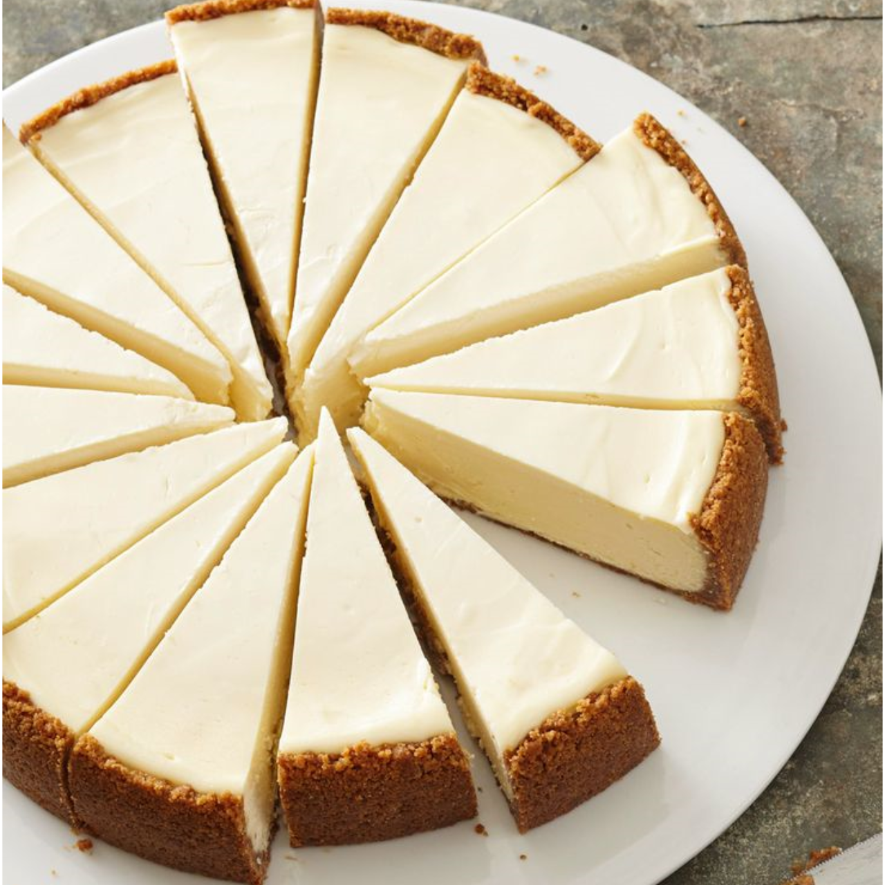

|  |
|---|
| ....::::**•°✾°•**::::.... |
| 18 graham crackers, crushed, 3 tablespoons melted butter, 1 cup sour cream, 1/4 cup all-purpose flour, 1 tablespoon vanilla extract, 4 (8 ounce) packages cream cheese, 1 1/2 cups white sugar, 2/3 cup milk, 4 large eggs, 1 teaspoon finely grated lemon zest,1 teaspoon finely grated orange zest |
| ....::::**•°✾°•**::::.... |
| Preheat the oven to 350 degrees F (175 degrees C). Lightly grease the bottom and sides of a 9-inch springform pan. Mix graham cracker crumbs and melted butter together in a bowl until evenly moistened. Press crumb mixture into the bottom and about 1/2 inch up the sides of the springform pan. Whisk sour cream, flour, and vanilla extract together in a bowl; set aside. Stir cream cheese and sugar together with a wooden spoon in a separate bowl until evenly incorporated, 3 to 5 minutes; add milk and whisk until just combined. Whisk in eggs, one at a time, stirring well after each addition. Stir in lemon zest, orange zest, and sour cream mixture; whisk until just incorporated. Pour mixture into prepared springform pan. Bake in the preheated oven until the edges have nicely puffed and the surface of the cheesecake is firm except for a small spot in the center that will jiggle when the pan is gently shaken, about 1 hour. When the cheesecake is done, turn off the oven and let it cool in the oven for 3 to 4 hours. This prevents any cracks from forming on the top of the cheesecake. |